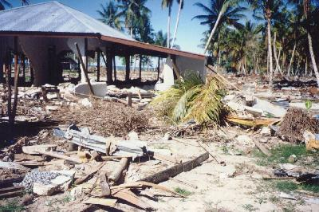
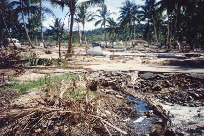
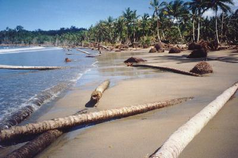
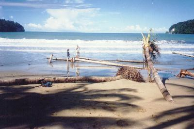

TSUNAMI BIAK (1996)
Korem village in the North coast of Biak Island  |
About 100 meter from the beach  |
| About 50 meter from the beach, the debris of the house have been washed out by the Tsunami  |
Coast line has changed, shows the
subsidence, very strange  |